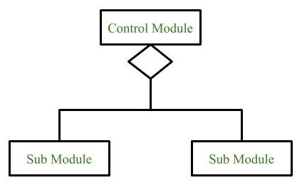
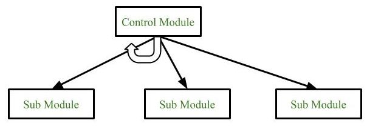
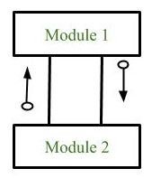
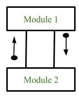

软件设计工具
Tools- H 图
- Hierarchy Chart
- 也叫 层级图、层次图
- 适合描绘软件的层次结构
- 整个结构由模块和调用关系组成
模块：使用矩形表示
调用关系：模块之间的连线
- 不体现模块的调用关系和数据流、控制流，而由 IPO 体现
- IPO
- 输入处理输出图
- 更多信息，请访问 IPO
- 详细设计阶段最常用的工具
- H 图把系统拆分成一个个小模块，IPO 图告诉程序员每个模块具体该设计及实现
- 模块需要什么数据
- 模块怎么处理数据
- 处理完产生什么结果
- HIPO 图
- 层级图和输入处理输出图
- H 图 + IPO 图；层级图 + 输入处理输出图

使用 PPT 绘制层次图

1. 输入 Input
2. 处理 Process
3. 输出 Output


软件结构图 Structure Chart
- 描述一个软件系统由哪些模块组成，结构图不仅描述调用关系，还描述传递的信息和调用方式
- 用来把一个复杂的系统拆解成子系统，子系统再拆解成模块
- 它强调的是“分解”，而不是“交互”
- 模块
- 使用方框表示
- 使用动词+名词的命名方法
- 三种类型：控制模块、子模块和库模块
- 关系
- 模块之间的调用关系
- 线段或单向箭头
- 条件调用：父模块根据条件，选择性地调用子模块/if-else
- 循环调用：控制模块根据条件，重复地调用子模块/while/do-while
- 数据
- 模块之间传递的消息/数据
- 带注释内容的箭头
- 数据流：空心圆
- 控制流：实心源



